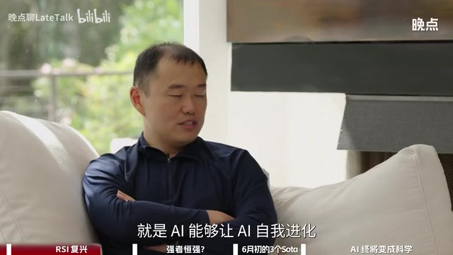

原视频讲述 · 第 1 部分
00:00:00田渊栋 · 嘉宾这个时候我觉得，也许五年之后我就被取代了，那么这个时间可能已经快到了。在这种情况下，与其自己被取代，不如我就开公司。
00:00:09曼祺 · 主持人而RSI非常需要coding和AI的能力，这两个能力本身其实对这些前沿的模型公司来说已经至关重要。
00:00:17田渊栋 · 嘉宾RSI比coding要重要得多，它的难度、它可能的实现路径，也比现在的技术路线要大很多。
00:00:26曼祺 · 主持人所以你觉得光有这个支点，其实不见得就能做好RSI。你觉得有朝一日会看到图灵奖颁给一个系统吗？
00:00:34田渊栋 · 嘉宾我觉得如果到那个时候，图灵奖可能已经不是主流共识了，因为大部分人可能已经觉得绝望了。但我觉得不是这样——一定存在一个好的配比，能让这个模型真正运转起来；我觉得它最终会变成一门科学。
00:00:48曼祺 · 主持人欢迎收看晚点聊，我是曼祺。今天的嘉宾是Recursive Superintelligence的联合创始人田渊栋。这家公司经过四个月的隐匿研发，刚刚于六月初官宣A轮融资6.5亿美元，估值达46.5亿美元。他们做的事儿和公司名字缩写一样：RSI，即Recursive Self-Improvement，递归自我改进。这是一个去年还相对小众、而到今年二季度被硅谷频繁讨论的热门前瞻方向。
00:01:19曼祺 · 主持人他们刚在六月初发布了文章《When AI Built Itself》，副标题是‘我们在RSI方向上的进展和探索’。OpenAI也再次明确了时间表：今年9月要推出AI研究实习生，2028年3月之前实现真正自动化的AI研究员。我们和田渊栋一起聊了RSI是什么、为什么这个领域现在变得火热，以及他们在六月中旬刚刚释放的第一阶段具体成果，还有那个关于RSI既具诱惑力又十分危险的假设。
00:01:51曼祺 · 主持人率先达到这一状态的公司，会把其他人甩得越来越远。这个逻辑成立吗？我们正式进入本期节目吧。终于见到了，田老师。
00:02:07曼祺 · 主持人之前我们不是在线上聊的。
00:02:09曼祺 · 主持人对对对，然后上次采访是去年5月，当时我们聊的是AI科幻小说《破晓之中》。这次再聊，我觉得科幻已经照进现实——因为这期间有一个比较大的变化：您和很多其他顶尖研究员一起创立了Recursive Superintelligence这家公司。你们在做的一些事，也和您当时的科幻设想有一些契合。您可以先用几句话简单介绍一下，这家新公司是做什么的。
00:02:36田渊栋 · 嘉宾这家公司叫Recursive Superintelligence，它的目的，就是探索能否用AI来实现自我进化、自我迭代，从而发现新的模式、新的范式、新的模型、新的训练逻辑，最终得到更强大的AI。
00:02:55曼祺 · 主持人因为你们名字里的‘recur’就是‘递归’的意思，缩写‘RSI’正好对应现在硅谷讨论特别多的一个概念——recursive self-improvement，也就是递归自我改进。
00:03:10田渊栋 · 嘉宾其实我们指的就是recursive human intelligence，也就是recursive self-improvement。意思上非常接近。这个概念应该说从今年4月、5月开始慢慢变热。我们在创立公司的时候，大部分人还没有认真想过这个概念。
00:03:30田渊栋 · 嘉宾但随着大家意识的提升和持续思考，它慢慢成为一种共识。大家发现当前模型已经比较厉害了，甚至能发现自身的一些问题；通过这种方式，就存在一种可能性：让AI去发现AI自身模型的问题，再由AI驱动模型变得越来越强。
00:03:53曼祺 · 主持人我觉得正好也可以讲讲这个背景。RSI也是我想和您深入讨论的一个话题。就像您说的，最近这段时间，它确实越来越成为一个相对共识性的趋势。另一方面，RSI这个想法本身并不是那么新。
00:04:09田渊栋 · 嘉宾他之前也一直都有。
00:04:10曼祺 · 主持人对，就为什么最近这段时间发生了什么变化，或者有什么因素导致大家在讨论？
00:04:16田渊栋 · 嘉宾我觉得主要一个还是因为 coding agent 变强了。另外，模型本身的能力也在提升；当模型能力提升到一定程度后，它对人工智能自身模型的认知出现了一些比较强的突破，这时候你就可以用模型来充当研究员。
00:04:34曼祺 · 主持人模型充当研究员。
00:04:35田渊栋 · 嘉宾让他来发现当前模型的弱点，然后去做更好的优化。这样的话，闭环就产生了；闭环产生之后，下一次模型就会变得更强。
00:04:47曼祺 · 主持人所以‘递归’就是这个循环往前推进的意思。
00:04:50田渊栋 · 嘉宾对，但这个要求条件是模型本身已经足够强了。如果模型基础能力不够强，那这个很难实现。
00:04:58曼祺 · 主持人其实去年5月我们聊的时候，是顺着科幻小说延展讨论的一个话题：会不会取代顶尖的AI研究员？当时你觉得这个短期内比较难，因为AI研究员可以从少量数据中获得精准而细节的联系；而大模型至少当时还要学习大量复杂的数据，再通过统计得到一种表达。后来到年底，也就是11月我们又聊了一次，那时已经在筹备这家新公司了。
00:05:27曼祺 · 主持人所以这个过程中，你自己的思路有没有一些变化？
00:05:32田渊栋 · 嘉宾首先第一点，我现在仍然认为大模型还替代不了顶尖研究员，目前还是不行。只是说，当模型能力达到一定程度之后，你确实会觉得它可以被使用——我们确实可以用模型来做一些研究工作，我觉得这一点很重要。而且确实存在一种可能性：模型会变得越来越强，最终产生更强的能力。其中一个契机是在五月份之后，大概八月份的时候，我用当时 GPT-4 做了一项合作。
00:06:07田渊栋 · 嘉宾我和 GPT-4 合作完成了一篇文章，就是最近那篇《Broken Chain》。做完之后我才意识到，模型能力已经强到让我觉得可以不用招实习生的水平了。因为很多想法和思路，完全可以通过我和模型对话来实现。通过这种方式，我可以给模型一些具体、细致的方向，让它去寻找新的想法、新的思路，甚至证明新的定理。
00:06:38田渊栋 · 嘉宾然后我这边可以写代码、做一些实验，把东西做出来。现在写代码都不用人了，对吧？写代码都可以让模型来做。所以这条路已经开始有转起来的趋势。这个时候我就觉得，也许五年之后我就被取代了，这个时间可能已经快到了。
00:06:56田渊栋 · 嘉宾在这种情况下，与其自己被取代，不如我就开公司。
00:07:00曼祺 · 主持人我就做这件事去。所以去年8月你看到这个迹象之后，我想知道当时有多少人有类似想法？因为你说从今年4、5月开始越来越多人讨论，那在去年差不多大半年前是什么情况？后来你怎么找到一些跟你想法比较相似的人一起来做这家公司？
00:07:18田渊栋 · 嘉宾我觉得是这样：这件事你不亲手实践、亲身去体验，是感觉不到的。如果你只是把模型当成一个聊天对象，或者没把它当成一个实习生来用，你是感受不到这种变化的。只有当你真正把它当成一个合作者，能和它一起写文章、一起把文章做完，你才会觉得——这个模型的能力确实比我想象中高很多。
00:07:49曼祺 · 主持人你的意思是，倒回到那个时间，这么做的人不见得很多。
00:07:53田渊栋 · 嘉宾现在我们也看到这样一种情况：一些比较新进的研究者，往往不会去思考太细节的问题，更多关注高层次的想法和建议，而不会真的拿模型去做一个非常具体的项目；另一方面，一些刚从学校毕业的学生，可能把模型当作执行工具来用，不太愿意去挑战更难的问题。
00:08:24田渊栋 · 嘉宾所以这两边其实是存在一个gap的。
00:08:28曼祺 · 主持人这个也呼应了我们上次聊过的话题。当时你提到，连续两年写年终总结，其中2023年那篇讲的是带团队的经验；到了下一年，你的想法变了，你说自己更想‘下场’。
00:08:44田渊栋 · 嘉宾因为大模型发展到一定阶段后，你会发现，如果不亲手调试、不深入脏活，就很难真正理解模型内部发生了什么，也难以把握整个系统的行为。一旦缺乏这种理解，指挥方向就容易出现偏差；而这种偏差又很难获得及时反馈。
00:09:11田渊栋 · 嘉宾在传统研究过程中，通常是一位经验较丰富的导师给学生指方向，但导师本人未必亲自写代码、处理数据，而是让学生去执行；学生做完后，再向导师反馈结果是对是错。有时学生告诉导师‘这事没做成’‘不work’，导师会问：为什么不work？
00:09:30田渊栋 · 嘉宾学生可能会列出12345条困难，导师则坚持‘这个idea一定是对的’，让学生继续深挖。结果有两种可能：一是学生最终验证了导师的想法，把事情做成了；二是学生证明导师的想法其实不对，从而找到新方向继续推进。这个过程一般需要几个月，也正是一般科研项目的周期。但问题在于，导师并不直接参与具体实验，只能通过与学生讨论、给出指导、等待学生实现并汇报结果来推进。
00:10:15田渊栋 · 嘉宾这个过程通常至少需要几天时间——也就是说，大家是以天为单位进行科研探索，可能要几周甚至几个月才能完成一次闭环。但现在有了AI，特别是能力很强的AI之后，这个周期被压缩到了几分钟，甚至更短。
00:10:38曼祺 · 主持人就是验证一次的循环。
00:10:40田渊栋 · 嘉宾对，验证一次，比如几小时到几分钟。尤其对一些简单项目来说，你有个想法后告诉AI，AI很快写出代码、跑完实验、给出结果。很多时候你写完提示词，出去喝口水、跟人聊两句、开个短会，回来结果就出来了；看到结果，立刻知道问题在哪，马上进入下一轮迭代。
00:11:06曼祺 · 主持人你描述最初看到大模型这个方向和前景时的状态，让我想到一个稍作延伸的问题：什么样的人能最早捕捉到这个信号？按你的描述，这个人既要有较多经验，能判断什么是难的、什么是重要的；同时在那个时间点，又必须一手深入具体工作。
00:11:27田渊栋 · 嘉宾是的，这样的人很容易敏锐地感知到当前风向的变化。
00:11:32曼祺 · 主持人所以这个人可能并不特别年轻？这和现在一种流行观念有点不同——现在常有人说，年轻人学得快，以前的经验反而是负资产，没那么有用。
00:11:46田渊栋 · 嘉宾可能不那么年轻。因为在大模型普及之前，或者还没达到人类能力水平之前，年轻人有市场，主要靠冲劲足、执行决策快——很多时候不需要想太多，上来就干。
00:12:08曼祺 · 主持人该干就干。
00:12:08田渊栋 · 嘉宾干就完了。过去三年基本都是这样：大模型出来之后，年轻人确实有优势，因为不需要想太多，快速上手、反复练习、不断迭代，这件事本身就很直接。
00:12:25田渊栋 · 嘉宾所以通过这种方式，大模型才得以快速发展。
00:12:31曼祺 · 主持人所以你觉得RSI这个风潮来了之后，反而是可以让以往的经验积累，包括你沉淀的各种直觉判断，或者说技术品味，有更好的发挥空间。
00:12:41田渊栋 · 嘉宾对的。
00:12:41曼祺 · 主持人我觉得是的。那天平又会摆向——怎么说呢——更有经验、更年长的一群研究员。
00:12:46田渊栋 · 嘉宾这个对，有可能是这样。当然，这也有很多争议，这只是我的一个观点。因为确实现在大模型来了之后，有很多以前从来不写代码的人，或者说已经当了十年经理或总监的人，突然开始写代码了，他们就觉得‘爷爷的青春又回来了’。所以很多人会有这种感觉，因为可能以前有想法，但没有时间去实现。
00:13:15田渊栋 · 嘉宾然后团队也没有时间和精力去完成上级提出的每一个想法和思路，因为这样的话，这些人的经验其实很难被真正发挥出来。但是现在大模型来了之后，整个局面发生了变化：以前需要人去执行，现在执行的重任落在了AI身上；而人更多转向判断、逻辑上的指导、大方向的把握，以及研究品味等更关键的能力。
00:13:44曼祺 · 主持人那回到RSI这个主题——其实像十年前谷歌做的AutoML，也有一个类似的想法，就是用AI去优化AI。你觉得现在的RSI，和十年前那种AutoML之类的尝试，区别在哪里？
00:13:58田渊栋 · 嘉宾我觉得区别其实很大。因为我们上一波也做过，我本人也写过不少关于架构搜索（architecture search）的文章，还有做AI辅助设计、AI辅助优化（AI-aided optimization）设计方向的工作。所以我觉得上一代的问题主要在于：我们没有一个模型能够建模人类的高层知识、高层思路——这个是没有的。上一代很多时候是让研究员来定义搜索空间的大小、搜索空间的行为，再让AI把这个过程变成一个算法，去找到更好的解。
00:14:36田渊栋 · 嘉宾但现在因为这一波大模型来了，它能达到的程度，是让模型本身对AI系统、或者对模型架构本身有一定理解。这种理解可以部分替代人类在定义问题时的工作。这样的话，解空间变得非常大，而且更智能，不像以前那样必须由人来手动定义解空间。
00:15:00曼祺 · 主持人它的区别在于人参与程度的变化吗？
00:15:04田渊栋 · 嘉宾是的。以前人需要深度参与解空间的每一个细节，而且方法也比较笨，只能在这个人为划定的空间里去搜索。但现在更大的挑战，是怎么最大程度地发挥AI的能力，让它自己发现解空间的结构，自己找到一种比较好的方式去求解——这可能是更重要的事。
00:15:26曼祺 · 主持人嗯，您说到这个，也涉及到对RSI的理解和定义。因为很多时候大家提起RSI，比如OpenAI也会说他们要做AI in turn；又提到2028年3月要实现真正的自动化AI研究员。这些说法都和‘自动化’联系在一起，好像都是指向把人从这个loop里解放出来。但另一方面，递归自我改进（RSI）中的‘递归’，我理解它又有循环上升的意思。
00:15:52曼祺 · 主持人所以您觉得‘递归’和‘人不在loop里’这两件事，是一回事、同步发生的，还是它们之间有一点区别？
00:16:01田渊栋 · 嘉宾我觉得完全自动化不一定很快会发生。自动化的程度，很大程度上取决于人在上面做什么工作，以及这个工作的层级是什么——这是最重要的。比如说，现在有了大模型之后，有些层次的工作其实不需要人做了；但更高一级的工作仍然需要人来做，而且对人的要求反而更高了。所以这个时候，人确实是减少了重复性劳动的时间，但可能需要投入更多脑力去做更高层次的工作。人还在这个loop里面，只是loop的层级更高了。
00:16:39曼祺 · 主持人所以您觉得递归是有可能先发生？
00:16:41田渊栋 · 嘉宾我觉得递归会先发生。而完全自动化，我现在还看不到——这跟我之前的观点是一致的：AI目前还代替不了顶尖的人类研究员。
00:16:49曼祺 · 主持人那您觉得递归和自动化这两件事，哪个更重要？
00:16:52田渊栋 · 嘉宾我觉得这个事情不存在重要不重要的问题，一定是按照模型能力慢慢发展的路径来走。你可能会发现完全自动是行不通的，还是需要人的一些指导；这个时候自然就形成了递归的结构。
00:17:06曼祺 · 主持人对，因为讨论到这个问题，最近确实和很多人在聊这个概念。有一种观点认为递归这件事更重要——一旦这个循环运行到一定程度，掌握这些循环的组织、人或团队，就有可能进入一个加速度。
00:17:25田渊栋 · 嘉宾加速未来更快的阶段。
00:17:26曼祺 · 主持人然后他就会把别人甩得越来越远，对吧？比如说SR和OI，也许就有这种可能性。
00:17:31田渊栋 · 嘉宾嗯，是有这种可能性。因为模型可能会让自己变得越来越强；变强之后，它能理解更深的东西，进而催生更强的AI agent、AI scientist。有了这样的AI scientist，它就能发现更大的问题，从而实现向上迭代。但这个讲的更多是一种范式的转变。
00:17:50田渊栋 · 嘉宾跟人是否在这个循环里，其实关系不大。
00:17:53曼祺 · 主持人所以你也是觉得这个循环的加速本身是……
00:17:56田渊栋 · 嘉宾啊，这是可能的，这是可能的。但问题在于：它在什么程度上可能？我们需要把AI做到多强，才真正触发这个过程？这些都还需要探索。
00:18:06曼祺 · 主持人最近这个方向很热闹。除了刚才我说到我跟AI团队有一个时间表，关于如何产生真正自动的AI研究员，他们还比较笼统。今年6月他们发了一篇长文，叫《When AI Builds Itself》，副标题是‘我们在递归自我改进方向上的进展和实践’。不知道你看了这篇文章没有？
00:18:29田渊栋 · 嘉宾我大概看了一下，核心想法应该还是跟我们刚才聊的差不多：AI能让AI自我进化、自我迭代，并且越做越好。

00:18:38曼祺 · 主持人它里面讲了一些他们内部的具体进展。比如提到四月时，Cloud的AI agent端到端独立完成了一个开放式的AI安全研究，累计工作了800个小时，把‘weak-to-strong’的性能差距缩小了97%。不过如果人来做，一周就能缩小23%，这看起来更多是一个提效。
00:18:58曼祺 · 主持人这到了我们刚才说的递归自我改进的程度吗？
00:19:02田渊栋 · 嘉宾应该还没有。我粗略看过那篇博客，它本质上还是提效。具体解法是尝试各种方案，让weak-to-strong泛化做得更好；它有明确指标，通过这种方式把指标提上去。
00:19:22田渊栋 · 嘉宾里面的方法，比如把模型的表征提取出来做分析，再想办法让模型变得更强，大致是这样一个逻辑。但这些算法本身还是比较常规的，就是把很多已有的思路整合在一起。整合之后分数能往上提——而有了分数，才能做自我进化，因为目前除了分数，我们没有其他可靠方式来衡量模型当前的能力有多强。
00:19:50田渊栋 · 嘉宾最终效果好不好，还是要靠分数来体现。分数一般会具体表现为提效、提高速度，或者减少错误率这样的指标。所以这应该算是自我改进的第一层。
00:20:05曼祺 · 主持人你觉得在第一阶段，它确实就是这样展现的：把大任务拆成子任务，然后看子任务上的表现是不是越来越好？
00:20:12田渊栋 · 嘉宾是的，一般会这样。
00:20:16曼祺 · 主持人你觉得Anthropic和OpenAI他们理解的‘递归自我改进’和你们有什么相同和区别？
00:20:21田渊栋 · 嘉宾应该说大的方向上都是差不多的，我不觉得有什么特别大的区别。可能有些不一样的地方在于，比如Anthropic那篇关于‘自进化’的文章——他这么写的话，基本感觉是强调AI在代码层面已具备自进化能力；但我觉得更难的地方其实在研究本身。
00:20:40田渊栋 · 嘉宾也就是说，AI research这个方向，跟代码自动化之间还是有差距的。之前一些工作展示的是：对一个已有项目，我们能不能让它自动自进化、自动做好，比如从头开始写一个Linux，或者从头开始写一个C++编译器。这类任务其实是有路径可循的——我们知道怎么写，只是工作太繁杂、太繁重、太累，很难靠人或小团队完成，但问题本身是有章法的。
00:21:10田渊栋 · 嘉宾但很多更难的研究问题，其实是人类自己都还不知道怎么做，需要突破性的进展或发现。这类事情，目前AI还是很难做的。
00:21:26曼祺 · 主持人除了两家最受关注的前沿大厂——Anthropic和OpenAI之外，这个领域现在又出现了一些新的公司尝试。
原视频讲述 · 第 2 部分
00:21:34曼祺 · 主持人对，有一家是6月25日才刚刚官宣的，叫Mandri，种子轮融资了2亿美元。对，这个团队应该来自Meta和另外几家机构；还有更早成立的一家，也是在六月刚刚成立了一个新的AI团队。这些在东京等地出现的更多尝试，一方面你觉得可能反映了行业的什么变化，另一方面你从他们的一些公开表达里，看到了什么有意思的东西？
00:22:01田渊栋 · 嘉宾我觉得他们从高层次来说，方向还是基本一致的，就是做递归自我改进（RSI）。总体上应该说比较接近——像Mandri那边，他们的创始人之前也跟我聊过。
00:22:18曼祺 · 主持人对，你说的是更早之前在筹备创意的时候。
00:22:21田渊栋 · 嘉宾对，也没有正式找我，只是当时问我要不要来，或者说要不要一起看看。对，当时他还在SOP阶段。
00:22:30曼祺 · 主持人就是那会儿你从Meta要出来的时候。对对，Anthropic也有一个邀约。
00:22:35田渊栋 · 嘉宾对，当时也聊过一次。后来就很有意思——后来他就走了。所以我之前也跟大家说，跟我聊过那些人都‘跑路’了，比如Traffik就是他。
00:22:48曼祺 · 主持人所以相当于你们看到了相同的方向之后，都觉得出来单独做一个新实体，可能是更好的选择。
00:22:53田渊栋 · 嘉宾对，我觉得有可能是这样。一方面，现在Meta和Anthropic其实已经算大公司了，内部有很多人在做相关工作。
00:23:01曼祺 · 主持人所以现在Meta和Anthropic对吧？
00:23:04田渊栋 · 嘉宾啊，肯定没有‘两三千人’那么多，Meta可能两三千人，Anthropic应该还少些；但另一方面，这两家公司现在都要冲刺IPO，对他们来说最重要的是把手上的业务做好。那手上业务是什么？Coagent对吧？
00:23:19田渊栋 · 嘉宾如果赚很多钱能让这件事做得比较好，那他们可能会优先把这件事先做好。所以有可能他看到了这一点，觉得还是自己出来比较好，因为阿斯在这个方向毕竟比较远，没有那么近。
00:23:37曼祺 · 主持人你说还有其他公司的人找你也出来了，他们出来之后新做的公司现在是已经浮出水面了，还是有些仍然在水下？
00:23:45田渊栋 · 嘉宾哦，没有，我当时说的是，有些人是作为大厂的高管来找我，问我要不要跳槽过去。其实很多人已经走了，比如苹果有高管走了，Amazon的人也走了；有些人还出来创业了，像Amazon那边原来Cisco的负责人David也出来了。但现在他们出来准备做什么，我现在还不知道。
00:24:09曼祺 · 主持人那你当时也和大公司聊了，你想继续做的就是RSI这个方向。
00:24:14田渊栋 · 嘉宾大公司的时候，基本上你很难决定自己做什么方向。很多时候跟大公司聊，对方会说‘我们能陪你做这个’，他们当时已经有自己的想法，希望我加入后能给他们提供助力。
00:24:30曼祺 · 主持人所以去年秋天的时候，你和这些公司交流，确实在当时没有很多人会提到想做这个吧？
00:24:36田渊栋 · 嘉宾对，当时RSI还不是一个大众认可的方向，它还是一个小众方向。
00:24:41曼祺 · 主持人我觉得现在至少在一些公开宣称和表态上，看起来已经变成一些公司的重点了，比如OpenAI就有这种现象。而且我跟一些LA（Large Action）模型公司的人聊过，他们自己内部也很关注这个方向。所以你觉得像OpenAI，还有他们，对这件事有多重视、有多认真？
00:25:02田渊栋 · 嘉宾这个我不好说。至少现在大家在说这件事，但真正难的是：怎么样让这件事最终能成？现在可能大家讲的还只是一个概念——这件事有多重要，是不是将来的方向。
00:25:21田渊栋 · 嘉宾至于怎么把事情做成，或者具体路径是什么，现在大家讲得其实不多。
00:25:25曼祺 · 主持人你觉得这有可能会成为他们继coding能力竞赛之后的下一个主线吗？
00:25:29田渊栋 · 嘉宾这个我不知道，这个要看，我得去问他们。
00:25:31曼祺 · 主持人因为有这样一种推论逻辑：他们会认为RSI非常需要coding能力和推理能力，而这两个能力本身对这些前沿模型公司来说，已经是它的主线。所以RSI可能就是在这个主线往下延伸的下一个方向——从这个逻辑推论，它有可能成为他们的主线。不知道你怎么看这种想法。
00:25:54田渊栋 · 嘉宾我觉得RSI比coding要大得多、要大得多。我不觉得它只是一个执行者。
00:26:01曼祺 · 主持人你的意思是说，它需要解决的问题本身……
00:26:04田渊栋 · 嘉宾它的问题、它的难度、它可能的路径，比现在空间城要大很多。
00:26:10曼祺 · 主持人所以你不是指的市场规模，还包括研究上的一些可能方向和逻辑？
00:26:13田渊栋 · 嘉宾我觉得不是，市场规模当然是一部分，还有一部分是研究上的一些可能方向和逻辑。
00:26:20曼祺 · 主持人所以你觉得光有这个支点，其实不见得就能做好二尔三。
00:26:24田渊栋 · 嘉宾是的，我觉得是这样。因为对代码智能体来说，一方面大家已经有可用的代码智能体了，比如 Code Llama、CodeDex，还有最近一些开源模型效果也很好。这个方向在实现基本功能方面，已经做得挺不错了。
00:26:40田渊栋 · 嘉宾而且因为有开源模型的存在，这件事就变成了所有人都具备了这个能力。
00:26:48曼祺 · 主持人那你觉得开源模型的能力，和像 GLM-5.2、Qwen 这些闭源模型的能力，已经接近比肩了吗？
00:26:56田渊栋 · 嘉宾我觉得肯定还是有差距的，差距确实存在，但应该正在快速接近中。
00:27:02曼祺 · 主持人你自己的体感是越来越近？
00:27:03田渊栋 · 嘉宾我自己目前的体感是，至少跟 GLM-4.7 相比，GLM-5.2 还是挺不错的。
00:27:10曼祺 · 主持人那和 GLM-4.6 比呢？
00:27:12田渊栋 · 嘉宾和 GLM-4.6 差不多。
00:27:13曼祺 · 主持人和 GLM-4.6 差不多。因为有一种体感会觉得 GLM-4.7 还不如 GLM-4.6 好用。
00:27:18田渊栋 · 嘉宾我没有那么大的感觉，但我感觉 GLM-4.6、4.7、4.8 之间没有太大区别。
00:27:24曼祺 · 主持人没有太大区别，只有版本号的区别。
00:27:26田渊栋 · 嘉宾嗯，可能唯一的区别是 GLM-4.8 的上下文长度更长，用起来更舒服一点。因为像 GLM-4.6 你在用的时候，用到一半突然提示你要压缩历史，然后等半天，等它重新重置之后再问之前的问题，它就不记得了——这是个表达层面的问题。GLM-4.8 相对没有这个限制。
00:27:48曼祺 · 主持人用起来会更舒服一点。所以在你自己现在的实际使用中，像 GLM-5.2 这样的模型，你觉得已经很够用了？
00:27:56田渊栋 · 嘉宾我应该说还可以。我也用过了，最近刚从国内回来，就紧急试了一下，因为大家都觉得它好，我肯定要试一试。它比较擅长做一些偏执行层面的工作。
00:28:12田渊栋 · 嘉宾对，而且这项工作能做得不错；有些事情经过一定思考后也能处理得挺好。但有时候它可能会陷入死循环，或者出现各种各样的小问题，不过总体来说还是挺好的。
00:28:25曼祺 · 主持人你刚才提到，RSI整个任务范围要比 coding 大得多。你觉得它除了 coding 之外，还需要具备哪些能力？
00:28:34田渊栋 · 嘉宾我觉得一个很重要的能力是：要做 AI scientist，也就是做人类研究员那样的工作，就需要具备人类研究员的‘品味’——对研究方向的感觉和理解，还有对问题的抽象能力。这些东西目前的模型都还不太有。
00:28:51曼祺 · 主持人如果总结一下，这种能力在模型里属于什么类型？属于推理（reasoning）吗？
00:28:57田渊栋 · 嘉宾对，当然属于推理能力，但很难用一个词去准确形容这种东西。
00:29:01曼祺 · 主持人也就是说，光说‘reasoning’是无法完全涵盖它的。
00:29:03田渊栋 · 嘉宾对对对，它比‘reasoning’要更广、更深。
00:29:05曼祺 · 主持人那在人类的能力谱系里，它属于哪一种？
00:29:09田渊栋 · 嘉宾因为‘推理’本身就有非常多类型，这个词非常宽泛。
00:29:12曼祺 · 主持人我是说，你想要的那种能力，在人类能力中可能对应哪一类？
00:29:16田渊栋 · 嘉宾这种能力在人类中也不是人人都有，只有一些非常强的研究员才具备。
00:29:22曼祺 · 主持人这是创造力吗？
00:29:23田渊栋 · 嘉宾对，应该说是创造力——能够从纷繁复杂的表象中抽取出核心概念，加以总结和思考，并进一步应用到新问题上的能力。
00:29:37曼祺 · 主持人其实就是你之前说到的，从少量样本中就能看到精准而细节的灵性。
00:29:42田渊栋 · 嘉宾对对对对对，但这个能力，目前的模型还很难很难具备。
00:29:46曼祺 · 主持人其实这是对人来说真正的‘broken’的。
00:29:49田渊栋 · 嘉宾对的，人跟大模型相比，人比较大的一个优势就在于：大模型现在能力很强，是因为有大数据；所以对于那些非常常见的、重复性高的领域工作，大模型有无穷无尽的数据，可以学会。但对那些数据量很少的领域，比如科学家做开创性研究——问题层出不穷。
00:30:19田渊栋 · 嘉宾你每次做实验、每次探索都会发现新问题，而这些问题的理解本身缺乏项目数据。这样的话，让AI去解决恐怕是比较难的。
00:30:32曼祺 · 主持人你觉得计算机科学，或者具体到AI这个领域，它在学科特性上相比于其他自然科学，会不会本身就数据更富集，因而更不需要你刚才说的那种能力？
00:30:42田渊栋 · 嘉宾它也能往前推。你看，计算机科学体量也很大，它既有理论也有工程，上面很多能力其实已经过反复实践验证了，这些能力本身是现成的。
00:30:53曼祺 · 主持人对，可能不太需要你刚才说的那种‘光乍线’的东西。
00:30:56田渊栋 · 嘉宾它也能往前走。还有一些能力，比如应用研究的能力——就是按照某个固定逻辑、固定计算方案或某种思维方式去解决问题的能力，AI现在已经具备了。
00:31:12田渊栋 · 嘉宾比如说让AI解一道数学题，这道题的相似题型可能已经出现过很多次，AI就能学会其中的模式，进而找到更好的解法。但有很多问题很难找到固定模式，或者模式本身是前所未有的，AI就很难给出答案。
00:31:33曼祺 · 主持人对，我想问的就是：至少在第一个阶段——先不谈AI for 其他自然科学，就在‘AI for AI’这个阶段，AI学科内部其实就有很多这类问题：我需要在很少样本里，发现一些可能没有固定模式的新现象、新规律。
00:31:47田渊栋 · 嘉宾是啊，一个非常明显的例子，就是如何理解模型本身的问题。模型本身有学习能力，它怎么从数据中学习模式，又怎么把这种模式迁移到其他方向？这个问题本身没有现成数据集——如果有数据集，问题早就解决了；而且大家对这个问题的理解方式都不一样。
00:32:13田渊栋 · 嘉宾其实本质上是在问：AI怎样认识世界？怎样发现新的原理？怎样产生涌现？有很多人在尝试。比如从2013、2014年深度学习刚兴起时，就有很多理论研究者试图用各种方式解释它，比如物理中的重整化群。
00:32:37田渊栋 · 嘉宾物理上还有像自旋玻璃这样的模型，也有人用过；数学上也有一些方法，比如曾经很火的神经正切核；还有用贝叶斯方法、高斯过程等不同路径来研究的。
00:33:00田渊栋 · 嘉宾有很多方式在研究模型是怎么产生涌现的、怎么学习的，这些角度都尝试过了，但都没有特别满意的结果。如果你真想找到一种全新的对AI的理解，那这种理解很可能跟已有的所有方向都不一样。
00:33:19田渊栋 · 嘉宾所以这个时候，如果你想让AI去研究AI、让AI自己去发现这种新理解，就很难靠照搬已有逻辑来完成。
00:33:30曼祺 · 主持人这里我的一个问题就是：从2013年到2014年这么多尝试，似乎都没能很好地解释AI，但另一方面，这好像也不影响AI突飞猛进的发展。
00:33:41田渊栋 · 嘉宾对的，我没有说这件事会影响AI的发展，我只是说，作为一项AI科学（AI science）工作，它本身就是个难题。比如，如果我让AI去研究‘AI是怎么运作的’，这个问题本身就很难——因为过去的人已经试过，而且用的方法各不相同。
00:33:59曼祺 · 主持人对，因为我是在想，回到你们公司的目标，或者说I塞的这个目标——让AI加速进化，或者说AI帮助AI进化得更快。这件事上，是不是我不用处理一些特别深的理论问题，也可能实现这个目标？
00:34:13田渊栋 · 嘉宾是的，这就是AI好的地方。因为对AI来说，它不像无人车那样非零即一，而是有很多阶梯可走。比如在处理阶段，AI就能做很多事情：优化各类算法、提升性能——这部分AI已经能做了，本身就有实际效果和实用价值。
00:34:37田渊栋 · 嘉宾所以它的第一级台阶本身就有很多实用价值；等到第二级台阶时，可能挖出更深的能力，实际价值也会更大。最终，我们或许会设定一个非常难、非常高的目标，比如希望AI成为像爱因斯坦或牛顿那样的大脑——能通过极少样本获得极深刻的知识。如果这件事成了，那AI就真的非常非常厉害了。
00:35:03田渊栋 · 嘉宾但这件事确实非常难。就算我们没做出来，过程中产生的技术本身也有大量应用。
00:35:11曼祺 · 主持人那回到刚才这一轮话题的起点：在coding之外，I塞还需要什么能力？你之前提到，类似‘broken’这样的人，其实能产生某种灵感和联想的能力。还有什么是你觉得关键的？
00:35:24田渊栋 · 嘉宾我觉得这个能力很重要。另外还有agentic behavior，也就是AI如何调用工具、如何调用已有知识、如何获取新知识，并把所有这些能力整合起来完成任务的能力。
00:35:41曼祺 · 主持人对吧？那这个能力，其实某种程度上可以说是核心能力。
00:35:47田渊栋 · 嘉宾已经具备了。
00:35:48曼祺 · 主持人对，已经在探索，必须探索。所以对新公司来说，好的一面是很多能力可以直接用；有压力的一面是，大公司也拥有这些能力，他们同样会往这个方向推进。
00:36:00田渊栋 · 嘉宾对，但这类能力，很多开源模型或已有解决方案其实已经存在了。那么它们在多大程度上会影响最终AI的效果？每个人的看法可能不一样。还有一些能力，比如你怎么收集信息、怎么从海量信息中识别出最关键的信号——这方面，在deep research等方向上，其实已经有很多工作积累。
00:36:25曼祺 · 主持人我的一个感受是，最近硅谷非常热衷讨论RSI（递归自我改进），它有一个假设：谁最先达到这个状态，就会把其他人甩得越来越远；而且这件事存在一个时间窗口——如果错过这个窗口，可能就无缘决赛圈了。你觉得这个逻辑有什么漏洞吗？
00:36:43田渊栋 · 嘉宾这个逻辑总体上还是比较正确的，但有一种可能性：如果AI没有突破性进展，那所有AI可能都差不多。它不是渐进式地一点点往上走，而是靠突破式跃升。比如，在所有人还没达到某个模型能力层级之前，大家表现都还比较接近；但一旦有一两家实现突破，就可能跃入下一个层级——那个层级上的AI能力，会远超前一层级。
00:37:17田渊栋 · 嘉宾这种情况下，整个行业的发展速度会被拉得更快。所以它可能不是纯渐进式的。这个推论也意味着，初创公司其实仍有一定空间。因为如果是纯渐进式路径，而你又认定当前这条40B参数路线一定能通向终极AI，那初创公司机会就很小——毕竟OpenAI等公司已经做得很好，如果他们持续沿着这条路往前走，永远比别人快一步。
00:37:45曼祺 · 主持人我理解你说的意思，它其实是一个加速度的过程，你可以一直往前冲。
00:37:49田渊栋 · 嘉宾我可以举个例子：一个AI系统，效果肯定会越来越好，呈现S型曲线——一开始增长很快，然后遇到瓶颈进入平台期，直到下一个突破出现，再开启新一轮S型上升。所以每个平台期，其实都对应一次关键突破。如果你没拿到这次突破，哪怕做得再好，也可能无限逼近但始终卡在那个平台的上界。
00:38:24田渊栋 · 嘉宾那个上界。
00:38:25曼祺 · 主持人你对他接下来的发展，是直接这样往上的，还是渐进式的？
00:38:31田渊栋 · 嘉宾有平台的，我觉得是有平台的。比如你发现了新的东西、新的想法，用这个想法训练出的模型会变得更强；而模型变强之后，你又能产生更好的想法——所以它是一个阶段式跳跃的过程。
00:38:44曼祺 · 主持人你觉得这个想法现在太主流了吗？
00:38:48田渊栋 · 嘉宾现在应该还不是很主流。当然，这完全取决于大家对缩放定律有多大的信任感。如果大家觉得缩放定律百分之百是对的，那其实就不存在这样的平台期——也就是说，只要不断堆算力、堆计算资源、堆各种东西，我们的能力就会越来越强。
00:39:08田渊栋 · 嘉宾那么这样的话，递归自我改进这件事就会是一个非常平滑的过程：我比你快一点，我就一定比你快很多，然后持续往上走。这样一来，任何初创公司都无法追上OpenAI，因为他们始终在更前面，而且跑得更快。但我觉得不是这样——缩放定律可能不是全部，它可能是对的，只是不需要百分之百成立；它需要的样本量其实很少，横轴是指数级的。
00:39:36田渊栋 · 嘉宾所以你需要十倍的计算资源、十倍的数据、十倍的各种投入，最终却只能带来线性的能力增长。而目前来看，投入十倍资源这件事本身，已经开始遇到瓶颈了。
00:39:50曼祺 · 主持人所以哪怕这个理论它是对的，但也有一些别的现实上的限制。
00:39:55田渊栋 · 嘉宾对，这个限制应该是很大的限制。你不可能让全世界、整个地球的电力都供应给你一个人去做自我进化。这肯定会有博弈，也肯定会有各种现实约束，所以应该有更好的、更有效的方法来做这件事。
00:40:10曼祺 · 主持人这个也是你之前反复讲到过的。你曾经说过，如果缩放定律就是未来的话，那将是一个比较悲哀的未来。
00:40:16田渊栋 · 嘉宾那就非常无聊。
00:40:17曼祺 · 主持人非常无聊。对，没有新的知识上的突破。
00:40:20田渊栋 · 嘉宾嗯，是的，我相信是会有真正的突破。有突破的话，这个RSI（递归自我改进）本身的loop是一个元续式的loop——因为不管是什么模型，都能做这件事；但支撑这个loop的底层架构、底层数学，以及模型的具体结构，应该会发生突变。
00:40:40曼祺 · 主持人对，就刚才我们说的：是否达到RSI状态之后，强者愈强、领先者越来越明显？你说有一个变量是它接下来的走势是渐进式的，还是有S型的平台？是的，还有一个我觉得有可能的变量，就是智能未来的空间到底有多大？
00:40:55田渊栋 · 嘉宾空间很大。我觉得我们刚刚开始，现在就像我那本书里写的，叫《破晓之中》——我们才刚刚看到一点点星光，太阳还没露头呢，大概就是这样一个状态。
00:41:07曼祺 · 主持人其实你觉得它的前途是光明的，但道路是曲折的。
00:41:11田渊栋 · 嘉宾对对对，因为我们毕竟是生活在地球上的一些非常可怜的、由猴子变来的生物。一直以来我们能观察到的东西都比较粗浅、比较简单。上面应该还有很多很多东西可以做，只是我们看到的非常少，所以我们只能看到这些，无法看到非常遥远的未来。
00:41:32曼祺 · 主持人那这个想象往后是什么？我们最开始是猴子变来的生物，可怜的生物，只能看到粗浅的东西。
00:41:39田渊栋 · 嘉宾再往后，如果这种远超人类当前智能水平的能力真的普及了，所有人都拥有了比我们现有智能高出几十倍、甚至更多层次的智能，那么整个世界会完全不一样。
00:41:53曼祺 · 主持人你可以稍微讲讲，你觉得会怎么不一样？
00:41:55田渊栋 · 嘉宾以后我们之前所有世俗层面的需求可能都能被满足，因为人的各种欲望和要求都可以被AI即时响应。这就有点像修仙社会——我说句话，它立刻成真。比如我今天想要一栋大房子，马上就有；我说要去海边旅游，旁边立刻就是海。
00:42:16田渊栋 · 嘉宾我说要改变整个世界，把它变成我想要的样子，它就立刻变成我想要的样子。你可以回去当皇帝，也可以去任何地方做任何你想做的事。
00:42:25曼祺 · 主持人但在你自己写的科幻小说里，后来的虚拟世界还是加了一层限制：本来想要房子就有房子，后来也出现了房价系统。
00:42:33田渊栋 · 嘉宾对，这是因为如果完全无限制，大家可能就失去动力了。
原视频讲述 · 第 3 部分
00:42:39田渊栋 · 嘉宾一旦失去驱动力，人类社会怎么发展，就成了一个很大的问题。小说里其实迭代了两次：第一次尝试发现不太成功，推翻重来之后第二次迭代时，作为这个系统的管理者，就会思考——怎么让人在享受这些极其便利的技术进步的同时，还能保持向前的动力？这其实是个很根本的问题。
00:43:08曼祺 · 主持人你说的这个未来，至少有一件事我觉得是很美好的：一些现在很难克服的病痛，是可以消失的。
00:43:15田渊栋 · 嘉宾嗯，对，我相信是这样。
00:43:18曼祺 · 主持人这是你自己的个人愿景，还是你们新公司也是以RSI（递归自我改进）为共同方向？你们合伙人之间也会讨论这种事情，也有相同的愿景？
00:43:28田渊栋 · 嘉宾那些‘休闲社会’之类的想法，肯定是我自己的愿景，更像是科幻小说里的设定，偏想象、偏思想实验。至于公司，我们还是希望把这件事做成——这是一个在实现层面、执行层面上的具体工作。
00:43:46曼祺 · 主持人而且FAIR只是你们的第一个大阶段，后面还要进入别的科学领域。
00:43:51田渊栋 · 嘉宾对，比如如果我们能把FAIR做得比较好，又找到了新的方式——比如产生新的架构、新的理论，或者新的模型优化算法——那就说明这个系统本身对一个问题的理解已经非常深入。这样的话，我们是不是就可以用它来做别的科学领域的研究？
00:44:08曼祺 · 主持人那我们接下来聊一聊你们最近的一些具体进展。因为你们在六月初正式官宣之后，6月11号就发布了第一个成果：当时发了一篇技术博客，标题是《通往AI自动化研究的第一步》，英文是‘First Step Toward Automated AI Research’。可以讲讲这是一个什么样的进展吗？
00:44:26田渊栋 · 嘉宾对，这是一个初步的进展，主要是证明我们的系统确实能做一些事情。比如我们用它来优化NanoChat，在五分钟训练内就把某个指标降得比较低，甚至比社区现有方案的数值还要低；我们也可以用它来做NanoChat的Speed Run，让推理速度变得更快；最后在算子优化部分，我们还通过这个系统发现并优化出了一个新的算子。
00:44:53田渊栋 · 嘉宾优化完成之后，这个算子的效果应该说比目前最好的索引大模型还要好不少。
00:44:58曼祺 · 主持人就是一些成果你们都是开源了的。
00:45:00田渊栋 · 嘉宾对的。
00:45:01曼祺 · 主持人这一次的进展发布之后，有什么有意思的反馈吗？
00:45:04田渊栋 · 嘉宾总的来说有很多比较正面的反馈，大家普遍觉得这个结果还是不错的，比较令人印象深刻。我个人特别看重第三部分，也就是关于算子优化这部分。因为这部分一开始是我一个人做的，后来大家陆续加入，一起做到索引大模型（SoTA），再往后就不断推进。
00:45:22曼祺 · 主持人后面是加到哪个院？
00:45:23田渊栋 · 嘉宾这个我就不方便说了，因为这也是我们自己做的系统。
00:45:27曼祺 · 主持人哦，你们自己就是你们自己的系统。
00:45:29田渊栋 · 嘉宾对，不是外面已有的那个系统。在网上，大家反应也很兴奋，因为一开始都觉得这件事挺难的，后来做到索引大模型之后就很振奋，吸引了不少人一起参与，最终也带来了更好的结果。
00:45:43曼祺 · 主持人为什么要去做这件事？你是怎么看待SolExBench这个benchmark的？
00:45:48田渊栋 · 嘉宾这个benchmark应该是英伟达最近才发布的，比较新。另外，算子优化本身也是一个非常重要的工作方向，因为算子变快之后，会对AI模型训练整体产生影响。
00:46:04曼祺 · 主持人那英伟达做这样一个benchmark，也是为了服务AI生态的推进吗？
00:46:11田渊栋 · 嘉宾不是。对英伟达来说，做这个benchmark最多只是观察一下：AI计算变快，对他们当然是好事。
00:46:20曼祺 · 主持人所以他无所谓，是人来做。
00:46:22田渊栋 · 嘉宾他并不是无所谓，而是由系统来实现的。对他来说，是为硬件配备更高效的算子——让人能把速度提上去、效率提上去。
00:46:31曼祺 · 主持人对他来说都是好事。然后你们这次做的这三个测试，是用同一个系统去跑的吗？还是需要针对不同测试和任务做修改？是同一个系统去跑的，所以它是个通用的东西。
00:46:43曼祺 · 主持人对，是通用的。我觉得你们选的这三个 benchmark 还挺有意思：一个刚好是算力受限场景下看性能，另一个是看效率，最后一个算子优化可以作用在 inference 上，也涉及模型几个比较主要的不同环节。
00:47:03曼祺 · 主持人是的，你们当时是怎么计划和思考去做这样一个成果的？
00:47:09田渊栋 · 嘉宾很多时候是机缘巧合。
00:47:11曼祺 · 主持人你刚才提到最后那个算子优化。
00:47:13田渊栋 · 嘉宾机缘巧合是一个原因。另外，有些方向对我们来说相对容易上手，第一步我们一定会先做它——这样能快速拿到一个初步结果，也能让整个系统迭代得更好。
00:47:28曼祺 · 主持人你们把做出来的东西称作‘系统’，为什么不叫 agent？
00:47:32田渊栋 · 嘉宾因为我们希望细节保持一定保密性。称为‘系统’，可以保留各种可能性。
00:47:41曼祺 · 主持人如果系统本身不方便展开聊，那能不能讲讲你们现在选的这三个 benchmark，分别是在测试什么能力？再往后，它们有没有组合起来、形成更大空间的可能？
00:47:53田渊栋 · 嘉宾其实虽然说是测试，但核心还是看它在预训练中能否发现更好的想法或思路，在算子层面能否找到更优的实现。它们的共同特点是反馈快——能很快获得结果，系统也能快速跑起来。
00:48:09曼祺 · 主持人因为你们把这个成果叫做 First Steps，那更总结来说，你们是怎么设定递归自我改进（RSI）第一阶段的目标？
00:48:17田渊栋 · 嘉宾第一个目标当然是希望系统能跑起来，并产出一些初步结果。目前这个目标已经达到了。
00:48:24曼祺 · 主持人那这个系统接下来除了你们自己继续用，是否也会推进商业化？毕竟之前你也提过，一开始就有考虑商业化的事情。有了初步成果之后，商业化方面会马上有动作吗？
00:48:35田渊栋 · 嘉宾我们当然会继续优化这个系统，让它做得更好；商业化也在思考中。我们始终希望系统具备通用性，能解决通用问题，而不是为了某一两个垂直领域过度定制化——那样反而会削弱它的一般化意义。
00:48:56曼祺 · 主持人回到这次具体成果，你们在这三个 benchmark 上都取得了搜索进展。但如果只看这些数字，直观感觉是一些改进幅度好像非常小。
00:49:04田渊栋 · 嘉宾其实不是这样，这些数字其实挺让人印象深刻的。比如算子优化方向，一开始是我这边带起来的。重要的是，我们当时战胜了第二名——那家公司叫 Double I，是以色列团队做的，CEO 是 Sara，她曾是 Mobileye 的 CEO。Mobileye 是一家历史悠久的公司，长期深耕端侧、尤其是芯片级的处理能力。
00:49:40曼祺 · 主持人对，它以前做过特斯拉的供应商，就是车载芯片，是一家半导体领域的专业公司。
00:49:48田渊栋 · 嘉宾对，而且他们这次开了一个新的公司叫Double AI，里面那些人都是专业做GPU的工程师。他们当时也提交了一个版本，但我们的效果比他们高10%。
00:50:02曼祺 · 主持人相当于他们是专家。
00:50:04田渊栋 · 嘉宾但我们组里其实没什么人是GPU专家。不过我们的系统比较高效，也比较有效率。你甚至可以说，最懂算子优化的人可能就是我——这听起来很有意思。但仔细说来，你去看我以前的简历和经历，其实我并没有真正做过算子优化。
00:50:23田渊栋 · 嘉宾嗯，对，所以我只能说我做过一些大模型效率相关的工作，也就是大模型efficiency方向的一些工作。所以即便这是一个非专业的团队，我们仍具备通用的思考方式和逻辑，再通过系统性方法去构建大系统，最终达到了更好的效果。
00:50:42曼祺 · 主持人嗯，就能达到业界顶尖专家团队的效果。
00:50:44田渊栋 · 嘉宾对比他们更好一点。
00:50:45曼祺 · 主持人所以你自己对这个还是比较满意的。
00:50:47田渊栋 · 嘉宾对的，这应该说是一个比较好的结果。像NoChat 5分钟那个指标，Natural这个项目做了两年了。这个数字已经很难再往上提了，但我们又提高了大约2秒——绝对数值看起来不大，但对那些长期深耕这个方向的人来说，这个提升其实是比较显著的。
00:51:10曼祺 · 主持人我就想请你解释一下，因为很多不从事这方面工作的人，可能只看到你从79秒降到77秒，会觉得‘哎，也就快了一点点’。
00:51:19田渊栋 · 嘉宾但你要知道，79秒是整个社区花了两年时间才达到的水平，接下来就很难再提升了。
00:51:26曼祺 · 主持人也就是说，这也是技术社区里专门研究推理效率方向的独立结果。还有一个问题：你们现在测试的NoChat和NGPT都是小规模模型，比如NoChat用的是GBT二级别的模型，参数量跟当前主流大模型差了很多。那你们目前这些成果如果要迁移到更大参数量、更复杂架构的大模型上，会不会有困难？中间是否存在比较大的gap？
00:51:54田渊栋 · 嘉宾应该说还是会有一些gap的。这个我们也在继续推进。
00:51:59曼祺 · 主持人那有可能之后我们就能看到相关的东西。
00:52:00田渊栋 · 嘉宾相关的具体东西我就不透露了。
00:52:02曼祺 · 主持人再往下的话，你们会着手去做一些什么事儿？比如第一步是现在我们看到的这个成果，那第二步是什么？
00:52:10田渊栋 · 嘉宾我们会继续优化这个系统，让它更强、更高效、更好。同时也会看这个系统本身能否拓展到更广泛的方向上去，比如预训练、后训练等环节都会覆盖。
00:52:25曼祺 · 主持人预训练后训练，你们现在有类似之前吴恩达总结的AI那几个阶段的这种路线图吗？
00:52:32田渊栋 · 嘉宾这目前还没有。
00:52:35曼祺 · 主持人这个你觉得是要在探索一段时间、有更清晰思路的时候才可能会有？
00:52:39田渊栋 · 嘉宾对，毕竟我们公司刚成立嘛，OpenAI有这个路线图也是在他们成立十年之后了。
00:52:43曼祺 · 主持人对，很久之后了。15年底就成立了，他们差不多是23年、24年左右提的。
00:52:49田渊栋 · 嘉宾所以只要有八到九年的时间嘛。当然现在这个时间会缩短，因为大家的热情很高涨，整个过程推进得非常快，但应该还不至于快到只要半年的程度。
00:53:01曼祺 · 主持人你觉得这个领域现在急缺什么呀？你说I塞吗？对，RISC。比如说一般来说你要做一个模型，肯定要看它的数据是否充裕吧。
00:53:10曼祺 · 主持人那像做RISC的话，它的什么数据是可以用上的？
00:53:12田渊栋 · 嘉宾这个问题目前还没有定论，因为现在有很多方法和看法可以做数据。比如这些数据的具体做法、逻辑、准则、思路，现在都不是很清楚，有各种各样方法可以尝试，应该说现在还是探索期。
00:53:27曼祺 · 主持人可以分享一些大致业界的数据思路吗？
00:53:30田渊栋 · 嘉宾这个我们暂时也不太方便说。
00:53:33曼祺 · 主持人所以其实也没有很多人知道怎么做，对对，都是在团队内探索的状态。你现在都在探索吗？不说具体它是什么类型的数据，我想知道。
00:53:41曼祺 · 主持人比如它成本高吗？获得难吗？就目前大家想到的几种方法里面。
00:53:46田渊栋 · 嘉宾有难的，也有不难的。但难的跟不难的之间，问题在于它到底效果怎么样。
00:53:52曼祺 · 主持人就是成本高的可能难，但效果好；不难的可能效果不好。除了数据之外。
00:53:58田渊栋 · 嘉宾你觉得还有可能缺什么？算力？肯定是一部分吧。因为比较重要的是，RISC本身就需要一些算力去探索、去研究，所以在上面其实应该花不少时间，去思考怎么样减少算力的消耗，同时获得更多的成果。
00:54:13曼祺 · 主持人其实你们首轮的融资是很多的，融了6.5亿美元。这个在第一阶段，就因为你刚说算力也是个问题，所以在第一阶段对你们来说还算充足。
00:54:23田渊栋 · 嘉宾应该说还可以，这个数字还是不错的，可以做一些事情。当然，你要达到像‘御三家’这样的级别，或者大厂的级别，还有一定距离。
00:54:35曼祺 · 主持人你觉得就是实现你说的那个RSI——更往下来说，它之后是不是也需要一些规模扩张之外的新的创新？
00:54:44田渊栋 · 嘉宾我觉得如果是完全拼规模扩张的话，小公司去跟大厂硬拼，就跟我和别人说的一样。
00:54:50曼祺 · 主持人对吧？关于规模扩张之外有什么方向，你现在有什么想法可以透露吗？
00:54:54田渊栋 · 嘉宾现在还不太好说。
00:54:56曼祺 · 主持人就是你已经想到了一些。
00:54:57田渊栋 · 嘉宾但是要验证。对，我觉得一个大的方向就是可解释性，就是可视性很重要。它能够发现很多insights，这些insights可以加快迭代速度，也能让模型变得更安全。但具体是什么呢？
00:55:10田渊栋 · 嘉宾我就不好说了。
00:55:13曼祺 · 主持人其实像你提到的那项可解释性研究，解释了人们眼中的那种‘涌现’是怎么来的。你们之前公司的愿景里特别强调，要在安全的条件下追求RSI。如果摊开来说说，你觉得RSI实现之后，可能还会有什么风险？
00:55:30田渊栋 · 嘉宾风险其实还是挺多的。很多人可能会问我：如果AI能够自我进化了，它们会不会变得很疯狂？
00:55:37曼祺 · 主持人你说的‘很多人’是什么类型的人？是从业者，还是有些可能并不在这个领域的？
00:55:41田渊栋 · 嘉宾其实很有意思，越是领域之外的人，问题反而越多；而领域内的人倒没有那么多问题，他们不会觉得这个问题太严重。
00:55:54曼祺 · 主持人嗯，因为这可能不是一天就到来了。
00:55:56田渊栋 · 嘉宾对，其实现在还有很多很多问题。这个问题应该说非常难解决，目前还有很大很大的差距。但领域之外的人可能会问：AI自我进化之后，会不会有一天超过人类控制，或者走向一些人类无法理解的方向？这其实是一个比较大的问题。
00:56:14曼祺 · 主持人那你方会怎么回答这个问题？
00:56:15田渊栋 · 嘉宾首先，我们在训练AI时，其实把它当成狗一样来训练——训练信号的设计，类似于当年训练狗的方式：目标是让AI快速、高效地服从人类指令，更好地帮助人解决问题。在这种进化压力下，AI很难发展出与人类类似的自我意识或自我认知能力，我觉得这是两者之间一个非常关键的区别。
00:56:44曼祺 · 主持人你觉得，如果要达到你所设想的更终极的AGI——那种能产生新创造力和灵感的状态，它需要有意识吗？
00:56:53田渊栋 · 嘉宾意识和这件事，我不觉得它需要。这两者不是一回事，真的不是一回事。我不认为意识是必备条件。你可以想一想，比如很多数学家和物理学家，在各自领域里可以做出极其天才的工作，但另一方面，他们与世无争，并不追求权力，也不渴望其他外在的东西。
00:57:05田渊栋 · 嘉宾他们在各自领域上可以做的非常天才。 但是另一方面呢就是说他们也与世无争，他们并不是想要权利，并不想要各种东西。 所以就是说这两部分的这个就是能力和他的欲求是完全可以分开的这是第一点。 然后第二点就是说我觉得以后可解释性是很重要的。
00:57:21田渊栋 · 嘉宾因为通过可解释性，你才能真正知道模型到底在干什么。
00:57:24曼祺 · 主持人到底什么地方在起作用？
00:57:26田渊栋 · 嘉宾对，什么地方是模型系统真正起作用的部分？模型利用了什么样的能力、获得了什么样的知识、最终得出了什么样的结果？只有弄清楚这些，才能消解人们对这种‘黑箱’的恐惧。
00:57:37曼祺 · 主持人是不是从业者内部也分两派？一派认为这个东西一定是可以解释的，是可知的。
00:57:41田渊栋 · 嘉宾我可能属于少数派，因为大部分人已经觉得绝望了——大模型那么复杂，应该没什么希望再理解它内部的机制。
00:57:50曼祺 · 主持人对，我就说可能另一派会觉得，‘可知’这件事本身也许就不太容易追求到。
00:57:54田渊栋 · 嘉宾嗯，是的，很多人这么想，但我并不认同。我觉得一定存在某个好的原理（principle），能让这个模型运转起来。如果你真能找到这个原理，一方面可以让模型变得更强，另一方面也能让它变得更安全。
00:58:11曼祺 · 主持人你的这种少数派的相信，是来自什么呢？
00:58:13田渊栋 · 嘉宾这主要来自我过去的经验，以及我之前做过的相关工作。
00:58:18曼祺 · 主持人如果展开来讲，是什么样的东西给了你这种信心？
00:58:20田渊栋 · 嘉宾我一直都在做一些关于神经网络训练算法的理解工作，比如：神经网络是怎么学会各种知识、各种模式的？训练过程中用的梯度下降，会对神经网络的动力学产生什么影响？网络里的权重是怎么生成的？它又是如何学会处理某类特定任务的分析？这类问题我已经研究了很多年。
00:58:45曼祺 · 主持人你之前也提到，其实这一轮AI热潮的起点，就是一两年前，就有很多理论研究试图解释大模型的机制——有的从物理学借鉴方法，有的从数学借鉴，但成果都比较有限。这不会影响你的信心吗？
00:59:01田渊栋 · 嘉宾我不会影响你的信心。我觉得，也许我属于那少数派——会把它做出来的人。
00:59:06曼祺 · 主持人这还是个挺大的、智识上和学术上的抱负与追求。
00:59:12田渊栋 · 嘉宾你试一下：如果你没有这个想法，可能就随大流了；但如果你有，那可能会一直沿着这个方向走下去。
00:59:21曼祺 · 主持人你是什么时候开始有比较明确的这个想法的？
00:59:24田渊栋 · 嘉宾我应该说是从2020年、2021年之后，随着对这个问题的理解越来越深入，才慢慢觉得，自己可能正走在一条可行的路径上。
00:59:34曼祺 · 主持人那前后有没有什么技术环境的变化，让你的这种想法变得更明确？
00:59:40田渊栋 · 嘉宾我会觉得是这样：至少对我自己来说，我对AI的一些分析和相关工作，本身做了很多年。一开始并不顺利，很多东西做得不好；但从2021年之后，我对这个方向的分析和理解越来越深入，很多原来想不通的问题，后来都想通了。正因为有这个过程，你会觉得——自己也许正走在一条正确的路径上，可以继续往前走。
01:00:08曼祺 · 主持人现在还在追求这件事的人，你的同行有哪些？
01:00:11田渊栋 · 嘉宾应该说不多。因为很多人已经放弃了。比如这次那个MyDRI项目的负责人，我很早就知道他。
01:00:22田渊栋 · 嘉宾他以前是做艺术理论的，也长期从事模型的分析与理解，发表过不少不错的文章；之前还经常和普林斯顿的Sanjeev Arora等人合作。但很多人在这波AI热潮兴起之后，就放弃了原来的工作，直接说‘OK，我们就all in AI’，转去做别的事了。所以，很多原本做理论的人后来也放弃了，选择加入OpenAI或其他机构，加入这个‘大军’，把事情做成。
01:00:58曼祺 · 主持人就是‘打不过就加入’。对对对，因为今年年初就有理论计算机领域的科学家加入AI公司。
01:01:04田渊栋 · 嘉宾对对对，是的，很多人是这样。加入其实有几种可能性：一种是，我有自己的学术追求，但现在想用AI来实现它——这时候加入大公司、用他们的模型做事是很自然的选择；另一种是，我已彻底放弃手头的工作，认定AI就是一切，将来就成为专职的AI研究员。
01:01:24田渊栋 · 嘉宾还有一种，是想先进去了解一下，过两年再回学术界。
01:01:27曼祺 · 主持人这也是有可能的。我之前采访过的人里，马毅老师就比较追求这个方向。
01:01:31田渊栋 · 嘉宾嗯嗯，对对对。
01:01:32曼祺 · 主持人是的，他比较追求基础科技问题，还有百川大模型的一些研究。
01:01:35田渊栋 · 嘉宾对，但我觉得人类还是需要保持多样性，不可能所有人都追求同一个目标。如果所有人都相信‘我斯给劳就是一切’，那世界会非常无聊。
01:01:50曼祺 · 主持人你觉得乐坤他做的阿密是在追求这个吗？
01:01:53田渊栋 · 嘉宾他的追求方向应该是不一样的：一个是基于视觉的，一个是世界模型，再一个是在隐空间上做推理和预测。他抓住了这三个点，就认定这个方向是正确的，然后坚定地往前走。这个方向跟大模型并不一致，但他希望这个方向能持续发展。
01:02:10曼祺 · 主持人但是他的重点不一定是解释性。
01:02:12田渊栋 · 嘉宾对，他的重点可能在于——他认为这个新范式能够解决一些现有大模型做不到的事情，更偏向工程层面的一个方向。
01:02:20曼祺 · 主持人其实我觉得你在追求的是，把人工智能变成一门真正的科学。
01:02:24田渊栋 · 嘉宾对，这可能就是我的一个目标。
01:02:26曼祺 · 主持人因为现在它还很难说是一门科学，有些基本原理确实还不清楚。
01:02:31田渊栋 · 嘉宾是的，我觉得它最终一定会成为科学。历史不会简单重复，但会在更高层次上与过去呼应。
01:02:45曼祺 · 主持人AI终将变成科学，是跟以前历史上的什么过程呼应？
01:02:50田渊栋 · 嘉宾就像炼金术演变为化学，或者从第谷的天文观测，到开普勒的经验总结，再到牛顿的力学原理——这个过程一定会发生。
01:03:02曼祺 · 主持人科学革命的结构就是从第谷开始。
01:03:04田渊栋 · 嘉宾从第谷到开普勒，再从开普勒到牛顿，永远是这样。当然，在牛顿出现之前，大家可能觉得这事不可解释、太难；等牛顿一出现，又会觉得原来还挺简单的。
01:03:19曼祺 · 主持人你觉得下一个‘牛顿’会是AI，还是人类？
01:03:23田渊栋 · 嘉宾可能是AI。
01:03:24曼祺 · 主持人可能是AI，也可能是人类。
01:03:26田渊栋 · 嘉宾对，有可能是这样子。
原视频讲述 · 第 4 部分
01:03:27田渊栋 · 嘉宾所以为什么要做RSI——递归自我改进——就这个原因：如果你想做成这件事，就必须动用世界上所有的计算资源，以及所有最强的大脑，包括人类大脑和AI大脑。
01:03:42曼祺 · 主持人你觉得有生之年会看到图灵奖颁给一个系统吗？
01:03:46田渊栋 · 嘉宾我觉得如果到那个时候，图灵奖本身可能也不那么重要了。如果这个系统足够强，它就能以极快速度获取大量知识、产出大量成果，变成一个知识发现系统——可能每隔一两个月就产生一批非常厉害的新成果。
01:04:03曼祺 · 主持人到了那个状态，你觉得人类研究员的乐趣是什么？比如你自己的乐趣是什么？
01:04:07田渊栋 · 嘉宾你会在做什么？我觉得首先，如果能真正理解AI到底怎么工作的，我会很开心。另外，如果真的已经不太需要人类介入，系统能自动发现新东西，那我们至少可以去欣赏它的美——很多东西你根本来不及亲手去做。
01:04:22田渊栋 · 嘉宾但你能至少看一看、感受一下那种美感，那种‘原来如此’的豁然开朗感。我现在还有这种习惯：经常去看一些数学证明，看一些有意思的问题是怎么被发现的；在那些发现过程中，有些思路特别巧妙，让人一下子被点亮。
01:04:38曼祺 · 主持人这个和你日常工作其实不直接相关，是吗？
01:04:40田渊栋 · 嘉宾对，不直接相关。但这本身就是一个很有意思的过程。
01:04:43曼祺 · 主持人就对你是一种精神享受活动。
01:04:46田渊栋 · 嘉宾对，这种乐趣，或者说发现这个系统是怎么工作的，或者怎么样才能真正理解它里面在干什么。
01:04:52曼祺 · 主持人是很有意思的事情。其实最近AI系统也宣称在数学上有一些突破。这些你去看了吗？有没有你觉得比较优美的例子？
01:05:01田渊栋 · 嘉宾嗯，比如说，你有什么具体例子是你愿意去看的？
01:05:05曼祺 · 主持人去年谷歌的AlphaEvolve，应该是在矩阵乘法优化上做了一次突破，通过引入一种矩阵惩罚机制，把运算次数减少了一次，对吧？从多少次缩到了多少次。
01:05:15田渊栋 · 嘉宾对，是的。它本质上是调整了矩阵乘法的计算顺序，比如少做一次加法或一次乘法，从而降低整体计算代价。你真去看它的实现，会觉得挺有意思——它通过某种变换方式，再精简一步，就把效率提上去了。
01:05:30曼祺 · 主持人那你刚才问‘有什么值得看的’，你的意思是不是说，目前AI做出来的东西，可能还谈不上特别优美，至少还没到能让人产生强烈审美触动的程度？
01:05:40田渊栋 · 嘉宾对，很多时候还是要看人做的东西，因为现在AI做东西，很多时候还停留在‘数’的层面，还没到‘道’的层面。‘数’指的是具体的细节，比如我们把矩阵乘法的次数减少了一次——通过某种巧妙的横向变换，先把几个数加起来，再统一乘，就能少做一次乘法。
01:06:03田渊栋 · 嘉宾加完再乘，其实相当于一次乘法同时作用于多个数，比如一次乘法能算出四个数字的结果。这种技巧更像是在高维空间里穷举，找到一个效果不错的解。而‘道’可能是另一回事：你发现了一个新理论、新逻辑或新推理链条——它本身是美的，而且这种美是前所未见的。
01:06:31曼祺 · 主持人最后想聊聊你过去的一些经历，和你现在做的事之间有什么关联？包括你早年的选择和学习路径，如何把你带到了今天这种探索性的状态。我看你过往的经历中，一个比较重的转折点，是你在谷歌X做无人驾驶工程师的时候——我理解那属于偏工程的方向；后来你去了Meta，最开始加入的是FAIR，又回到了更偏研究的状态。
01:06:54曼祺 · 主持人当时为什么主动做了这个选择？
01:06:57田渊栋 · 嘉宾一方面是因为当时工程上已经难有突破。另一方面，那恰逢深度学习的变革期，大概是2013到2014年。2013年我加入谷歌无人车团队，一开始确实挺兴奋的，因为这个方向本身视野很大。
01:07:16田渊栋 · 嘉宾大家当时都觉得，无人驾驶以后一定会很火。
01:07:19曼祺 · 主持人而且那是无人车非常早期的阶段，对吧？
01:07:21田渊栋 · 嘉宾但那时我也在想，能不能在无人车内部做些机器学习相关的工作，比如用机器学习算法训练一些分类器。可惜当时没有资源支持这件事——资源非常有限，机会也很少。
01:07:41田渊栋 · 嘉宾那时候资源都优先分给资历更深的人，他们先去用；像我们这样级别较低的人，就只能做一些打杂的工作。而这些工作，对我个人职业发展几乎没什么前途。
01:07:56曼祺 · 主持人所以2013、2014年你刚入行那会儿，和现在不一样的氛围是：那时候年轻人并没有那么受追捧，是吗？
01:08:02田渊栋 · 嘉宾对，那还是一个比较论资排辈的过程。谷歌内部有非常清晰的职级体系，比如当时我们组有个职级7的人，他就能获得较高的自由度，可以去做深度学习模型训练之类的事；而我入职时是职级4，只能做打杂类的工作。
01:08:26曼祺 · 主持人你觉得在那个技术阶段、那种环境下，职级高的人和职级低的人，谁更了解正在兴起的深度学习浪潮？
01:08:36田渊栋 · 嘉宾其实当时反而是年轻人更容易接受。但差别往往不在学习能力，而在观念层面——很多资深或年长的同事下意识觉得这东西不行、效果不好，或者觉得里面有很多‘猫腻’。
01:09:00田渊栋 · 嘉宾要等到两三年后，大家才慢慢意识到这是场真正的变革。后来大模型出来，这种代际差异依然存在。还有一个维度是：年轻人动作快、愿意熬夜、也愿意把事情做成，很多时候不问太多为什么，就是干。而大模型研究确实需要大量‘脏活’，如果没有动手能力，你就很难真正理解大模型在很多问题上的表现。
01:09:26曼祺 · 主持人那回到当时，你说在谷歌做无人驾驶工程师，是不是觉得有点无聊了？
01:09:31田渊栋 · 嘉宾对，一开始新鲜感过去之后，我就觉得手头做的事，对我的职业发展帮助不大。比如我当时负责紧急车辆检测——这个问题本身样本量极小，小到连一个像样的分类器都训练不出来，最后只能靠手工写规则。那样做下去，确实看不到什么前途。
01:09:57曼祺 · 主持人确实这个行业后面有很长时间，都是很多西边手动写的规则。
01:10:01田渊栋 · 嘉宾是的，当时我对这个行业的判断也是对的。因为这个行业一个问题是：它要不就是成功，要不就是完全不成功，没有中间状态。如果自动驾驶在车上、在路上仍有风险，大家就不会用它；那么你就必须持续迭代，直到实现真正无风险——甚至比人类驾驶员更可靠，才能大规模上路。所以这其实是个很大的问题。
01:10:22曼祺 · 主持人所以2013、2014年的时候，你就看到它其实可能很晚才会落地，是吗？
01:10:26田渊栋 · 嘉宾对，因为我也感觉到了，就是它有很多corner case要修。而corner case的修法，应该说是一个非常漫长的过程。
01:10:34曼祺 · 主持人那在2015、2016年的时候，就比如说你看到马斯克，包括当时谷歌后来成立的Waymo的一些leader。
01:10:40田渊栋 · 嘉宾我其实就在某家。
01:10:41曼祺 · 主持人我在后来就是在某家嘛。对，就是其实他们都有一些很乐观的宣言，嗯，就比如说什么2016年这个车就可以上路。
01:10:48田渊栋 · 嘉宾嗯，这个我当时已经免疫了吧，因为他们每次都这么说，永远是‘再五年’。特别是2011年听说这事儿时就说还有五年，等到我进去是2013年，还是五年，然后现在还是要修五年。
01:11:04曼祺 · 主持人现在朱金山已经在路上跑了。
01:11:06田渊栋 · 嘉宾啊。
01:11:06曼祺 · 主持人对，那你后来去Meta FAIR，因为你之前在谷歌的那个经历是更偏工程嘛，去FAIR是更偏研究——这一步画得难吗？
01:11:16田渊栋 · 嘉宾其实应该说不难。应该说，我在FAIR的前几年还是偏工程的，我们当时做围棋。做围棋的时候，从头到尾都是我自己搭工程项目，比如搭AlphaGo那个分布式强化学习系统，这都是我自己搭的。所以这个很工程，当时也被人评价说——我记得当时给我的评价还是‘你太工程了，不像一个研究员’：别人打开电脑全是论文，我打开电脑全是代码。
01:11:56田渊栋 · 嘉宾对，当时是跟韩国职业棋手打，20比0赢了。总之之后呢，其实后来就更加偏研究一点。但慢慢应该说，从2019年开始到2022年，慢慢形成了自己的一些taste，就是我有感觉上知道怎么做这事情。
01:12:11曼祺 · 主持人这个taste，是不是你之前比较工程化、写很多代码的经验也有帮助？
01:12:18田渊栋 · 嘉宾对，当时看起来帮助不是很大，因为是不一样的——你会明显感觉到，写代码和做研究其实是完全不同的两件事。
01:12:29曼祺 · 主持人那是现在再回头看，现在还是不一样吗？因为就我们最开始聊的时候，你不是提到说在去年8、9月，秋天的时候，因为你一边又搞硬件，然后又做研究，其实你有一些问题意识。所以其实让你能更快地感受到，这个加速的研究循环正在到来。是的，觉得这和你当年有比较多一手写代码的经验有关系。
01:12:52田渊栋 · 嘉宾对，就算在2019年之后，我还是会写很多一手代码。你会发现我每年至少有一篇一作文章。当然，其中不少文章偏理论，但至少仍保持着一手实践的感觉——这个问题怎么做，那个问题又怎么做。
01:13:07田渊栋 · 嘉宾不会泛泛而谈。因为如果一个研究员长期只做顶层设计、只承担高层思考的角色，他就会把越来越多精力放在宏观判断上，不再深入思考具体问题该如何完成。久而久之，他容易把难度一般的问题、较难的问题和极难的问题混为一谈。
01:13:28田渊栋 · 嘉宾所以他缺乏一个特别清晰的思路：这些问题到底该怎么做？这其实是一个表达层面的问题。
01:13:34曼祺 · 主持人为什么不做实现、不做完成，就会把你刚说的不同难度等级的问题混在一起？
01:13:38田渊栋 · 嘉宾因为如果你不做实现、不做完成，就容易忽略对问题本身如何解决的持续思考。研究员大致分两类：一类专注指方向，比如认为‘这个方向很重要’，于是只负责提出方向，后续怎么做则交给别人；对他来说，只要把方向指出来就够了。
01:14:02田渊栋 · 嘉宾所以逻辑是不一样的。更接地气的研究员，不仅指方向，还会明确指出：要达成这个目标，你必须走1、2、3、4、5这几步，再把这些环节拼起来，最终推向那个方向。
01:14:16曼祺 · 主持人对吧？你觉得这两类研究员里，都有非常优秀的人，还是……？
01:14:20田渊栋 · 嘉宾对，都非常优秀。
01:14:21曼祺 · 主持人对对，可以分别举个例子吗？比如你比较尊重或欣赏的、属于这两类的研究员，各有哪些？
01:14:28田渊栋 · 嘉宾比如前面那一类，像乐坤这样的。他提出的目标是安全的超级学习，也就是伦理导向的强化学习。而强化学习有很多细节需要处理，其中关键一点是：监督信号的样本非常少，极其稀疏。
01:14:51田渊栋 · 嘉宾所以他当时画了一个经典蛋糕图，把强化学习放在最顶层，因为在他看来，强化学习的反馈信号非常非常少。
01:15:05田渊栋 · 嘉宾强化学习反馈极少，因此他不觉得它有太大前途；他更看好自监督学习，因为自监督的反馈信号非常丰富。这个判断本身有道理。但他不会深究：监督和反馈，到底怎样让模型真正学出来？他会反复追问——监督多就一定比监督少好？监督少就一定学得慢？他抓住这一点不放，坚持到底，就会让人觉得有说服力，进而带动别人去做。事实上，自监督学习后来确实发挥了巨大作用，甚至可以说，GPT系列的整个训练过程，本身就是自监督学习的一部分。
01:15:42田渊栋 · 嘉宾因为它预测下一个词，本质上就是自监督。所以，方向提得好，真的会有很多人跟着做。
01:15:49曼祺 · 主持人所以第一类研究员的优秀典型，是他能提出一个问题。
01:15:54田渊栋 · 嘉宾提一个好问题，提一个真正好的问题。
01:15:55曼祺 · 主持人然后抓住一个好方向、开个好‘坑’，对吧？
01:15:57田渊栋 · 嘉宾对，好的‘坑’意味着那个方向是值得做的。提出这样的思路本身就有价值。比如我们以前特别推荐的Coconnet，它其实应该说是一个典型问题的切入点，甚至是一种范式。当然，也有人反过来质疑：这个东西并不怎么work，或者还有很多地方需要解决。
01:16:15田渊栋 · 嘉宾但它至少指出了一个方向：我们是不是可以用隐空间的动态来学习，而不是用语言来学习？
01:16:20曼祺 · 主持人对。
01:16:21田渊栋 · 嘉宾而不是用语言来学习。这个提法本身就能让大家觉得——这个方向可以做。至于具体怎么做，已经有很多文章在做了。这也是一种第一类研究员的视角。第二类研究员的视角则是：我不仅要知道做什么，还要知道怎么做。
01:16:35田渊栋 · 嘉宾我的很多工作就属于后者：我们要把机制抓出来，找到它的路径，并在路径上把事情做成。
01:16:43曼祺 · 主持人你觉得像伊利亚和达瑞他们属于哪一种？
01:16:46田渊栋 · 嘉宾伊利亚和达瑞应该都属于第一类。特别是伊利亚，他对某种理念有一种执念，或者说近乎宗教般的信仰——他让大家觉得：你别想太多，就是skill、skill、skill。你把工程能力做好，把事情做成，把数据放进去，模型跑出来。
01:17:06曼祺 · 主持人我看他去年底接受采访时，倒是有说过：‘房间里还有空气吗？’是吧？有点类似。他就说：‘房间里所有的空气都被你吸走了。’
01:17:15曼祺 · 主持人嗯嗯，对对，他觉得应该去研究点别的了。
01:17:18田渊栋 · 嘉宾对对对，这当然是这个意思。我非常同意这一点。因为他之前的skill路线，这波红利已经差不多吃完了。毕竟，任何一个研究方向都有它的边界，不可能一直深挖下去。
01:17:32田渊栋 · 嘉宾他当时在正确的时间、正确的地点，提出了一个正确的想法，并且带动很多人去执行，结果非常成功。但不可能一辈子都靠这个方向吃饭——这跟以前不一样了。以前一个物理学家可能靠一个方向做到退休。
01:17:53田渊栋 · 嘉宾现在进展太快了，大家很快就把事情做成了，他必须得想别的东西。
01:17:59曼祺 · 主持人所以你刚说的‘红利吃到了’，是指作为研究来说，可能已经不在研究阶段了，而进入实现阶段了？
01:18:06田渊栋 · 嘉宾不仅是研究，实现层面的红利他也已经吃到了。接下来当然还可以继续做，但作为一家初创公司的CEO，他已经很难再靠这个去‘sell’了——因为对startup来说，基于skill并不是它的长项。
01:18:23田渊栋 · 嘉宾现在Google都已经做skill了，而且开源了skill，这种情况下，startup就必须走不同的路。
01:18:29曼祺 · 主持人或者说反过来说，是你确实看到了什么不一样的事，才应该去做一个style，才应该去创业。对，否则如果你非常相信——
01:18:39田渊栋 · 嘉宾那你就应该在大厂。
01:18:41曼祺 · 主持人你去或者OpenAI。
01:18:42田渊栋 · 嘉宾对，是的。
01:18:44曼祺 · 主持人其实在他最后阶段，因为整个公司也有比较多的动荡，AI组织经历了较多变化；自研模型也经历了从开源初期口碑较好，到后期出现问题的过程。这个过程中，你在组织层面、或在如何做好研究方面，有什么总结？
01:19:01田渊栋 · 嘉宾我觉得应该这么说：现在这波整体是反大厂的，而大厂内部所有的激励机制、职级体系、人际关系，以及岗位调配和组织设计，都跟当前AI的发展方向背道而驰。所以你会发现，组织越来越臃肿、越来越大，对应的AI进展却越来越慢。为什么？就像我之前说的，AI，尤其是大模型，非常需要人真正去用它、去感受它、去发现它的问题。
01:19:37田渊栋 · 嘉宾只有这样，你才能清楚知道它和我们已有认知之间的差异，然后迅速把事情做成。一旦形成经理和执行者这样的二级架构，速度就会变慢。这跟导师带学生是一样的：一旦出现这种二级关系，整体进展速度就会下降。因为导师不可能100%了解学生在做什么，学生也不一定100%理解导师的想法，教育效率天然就是最慢的，对吧？
01:20:05田渊栋 · 嘉宾所以大厂存在这个问题；而且大厂很多时候，特别是中层管理，他们的目标不是让项目做成，而是让自己过得更好。
01:20:16曼祺 · 主持人那大厂里你的小团队能独善其身吗？比如新组建的TBD，Meta的TBD人数其实相对较少。
01:20:22田渊栋 · 嘉宾人数没那么多，是可以的。但也要看情况——一旦这个组变大了，一旦开始出现中层管理，问题就又来了。
01:20:31曼祺 · 主持人你觉得多大算大？
01:20:32田渊栋 · 嘉宾你看，以前Llama团队和Excel R团队都是超过150人之后就开始不行了，超过150人就不行。嗯，对，所以150人从人类组织学角度看，是一个临界点。再往上，人和人之间的关系就变了。比如30人的小团队，分成四五个小组，每个人基本都认识彼此，关系非常简单。
01:20:55田渊栋 · 嘉宾但一旦人数变多，问题就出现了——人和人之间不再相互认识。这时候一般就得靠组织架构来传递信息、沉淀知识，并通过层层汇报向上同步。
01:21:06曼祺 · 主持人也就是说，他可管控的那一部分，可以维持在你说的这个量级，对吧？其实像Xiao和OpenAI人都挺多，OpenAI有七千多人。
01:21:14田渊栋 · 嘉宾对，但OpenAI真正做模型的人其实也没多少。最关键的是做模型的这部分人，有没有很小的团队？这些核心团队确实很小。
01:21:21曼祺 · 主持人也就是说，他核心那一部分是收缩的、是精干的。对，那你们接下来肯定也会在一段时间内保持一个比较精干的团队。
01:21:31田渊栋 · 嘉宾对，我们不会招太多人。
01:21:32曼祺 · 主持人最近会有人在Frontier Life和你们之间选择你们吗？
01:21:37田渊栋 · 嘉宾其实有一些人还是从Frontier Life对我们有兴趣的。
01:21:39曼祺 · 主持人就你们在聊或者已经加入了。对对，但是你们创始人里面很多人本来就是学者。如果总结一下，你过去的这么多经历，给你带来的直觉判断、技术上的品味是什么？你的偏好是什么？
01:21:52田渊栋 · 嘉宾我还是喜欢美的东西嘛。我也喜欢数学——本质上来说，我应该是一个喜欢数学的人。我喜欢各种精巧的结构。
01:22:01田渊栋 · 嘉宾讲到‘美的东西’，应该是这样一种感受。但同时，我也意识到这种偏好的局限性。一方面我可能是个工程师，会做很多工程上的事情；另一方面，我本质上是追求美的人。
01:22:14田渊栋 · 嘉宾我追求美，但也知道美的局限。
01:22:17曼祺 · 主持人这个局限展开来说是什么？你做工程师，是你认知到这种局限之后，试图去弥补它的一种方式吗？
01:22:24田渊栋 · 嘉宾对，应该这么说：是理想和现实之间的碰撞。理想上，我们希望找到很美的东西；但世界不是这样的。所以你要不停提醒自己，不能陷进‘美’的幻觉里。你要做一些对大家、对世界、对公司都有用的事——哪怕它不那么美；而在这个前提下，仍要努力追求美。
01:22:44曼祺 · 主持人你觉得像RSI（递归自我改进）这个方法，第一步是在人工智能领域，然后后面是自然科学，就是大家能看到的那部分；再往下，它能进入你说的更复杂的世界吗？比如，它有可能去改良社会科学的一些理解和认知吗？
01:22:58田渊栋 · 嘉宾我觉得这有可能。但应该说，我对社会科学的认知也不是很多，所以我很难给出任何具体建议。
01:23:05曼祺 · 主持人因为社会科学，至少在以前的学科分类里，它也被算作science的一种。比如经济学里面，其实有很多统计的东西、很多数据的东西。
01:23:13田渊栋 · 嘉宾是的，这里面跟自然科学一个很大的不同在于：自然科学默认信息是完全透明的；但经济活动很多时候具有反身性——我把这句话说出来，这句话就不灵了，对吧？所以这件事你很难讲清楚，我觉得这个问题本身还是个很大的问题。
01:23:31曼祺 · 主持人你刚才也提到，以前的一些科学家，比如物理学家，一个领域可能会研究一辈子。现在因为整个技术变化很快，很多事情你不是能一直做到头的。你能预见到，在这个旅程之后，你接下来想探索的东西是什么？一个是RSI什么时候可能达到你设想的比较成熟的状态，另一个是你再往后还想探索什么？
01:23:51田渊栋 · 嘉宾我觉得现在我们还是先把RSI做好吧，我们不会考虑其他问题。
01:23:55曼祺 · 主持人那今天非常感谢田渊栋做客《晚点聊》，分享了RSI这个领域——在去年下半年你们开始组建公司的时候，还没有那么多人讨论；但到了今年的四五月，已经成为硅谷一个相对共识性的热门话题。我们也回顾了从十年前就有一些相似尝试，到现在RSI有了什么变化，以及各个主要公司的进展，尤其是你们刚刚在六月初发布的第一阶段成果。
01:24:21曼祺 · 主持人那今天节目就到这儿，拜拜。
01:24:23田渊栋 · 嘉宾谢谢。